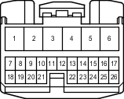

Part Name
Main Body ECU
Connector No.
F48
Connector Part No.
90980-12561
Connector Color
Milky White
Repair W/H
025Ⅲ-20,090Ⅱ-6

Routing Diagram
Instrument Panel Routing Diagram (No.1) /
System Circuits
Power Source
Starting
Ignition (2AZ-FE)
Ignition (2GR-FE)
Engine Control & CVT & Shift Indicator (2AZ-FE)
Engine Control & ECT & Shift Indicator & Radar Cruise Control (2GR-FE)
Power Window
Smart Entry & Start System & Engine Immobiliser System & Steering Lock
Seat Belt Warning
Combination Meter
Headlight (Halogen Headlight) (~'09.12)
Headlight (Halogen Headlight) ('09.12~)
Headlight (Discharge Headlight) (~'09.12)
Headlight (Discharge Headlight) ('09.12~)
Headlight Manual Leveling
Headlight Auto Leveling
Automatic Light Control
Fog Light (Front)
Fog Light (Rear)
Interior Light
Taillight & Illumination
Light Auto Cut